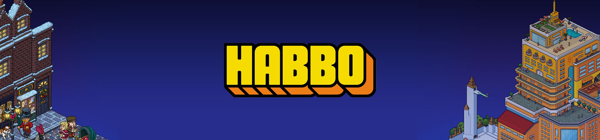
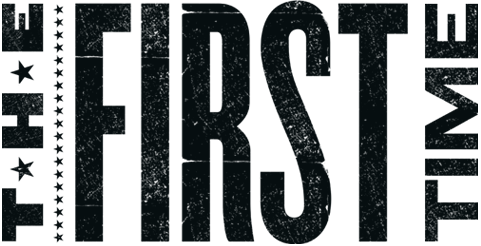
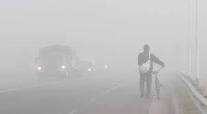
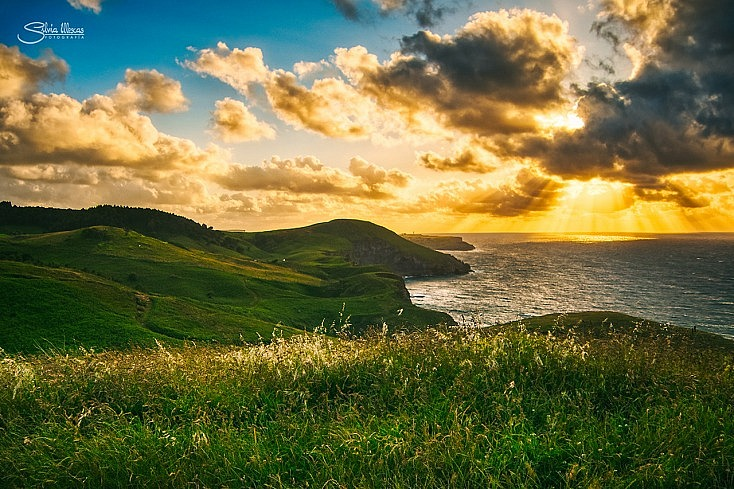

2012 - El Inicio

Un año dificil para mí, habia dejado todo atras, amigos, lugares, familia, para iniciar de cero en otra ciudad. Y aunque al comienzo fue duro, poco a poco fuí animandome, el mundo de habbo me ayudó a conocer muchas personas que me acompañaron, y entre ellas la más importante, Tú..
Aunque como lo hemos conversado, nuestra forma de conocernos fue un tanto raro, por como fue, por como se dió, pero siempre que puedo le doy gracias a Dios por eso, por permitirmelo.
Recuerdo que pasabamos mucho tiempo en habbo, haciendo laberintos, o simplemente hablando, era lindo.
2013 - El Gran Paso
La verdad no recuerdo cuanto tiempo pasó, no se si fue un año exacto, o meses, que creo que fue meses, pero recuerdo que pasé horas haciendo eso en donde te pregunté si querias estar conmigo; no recuerdo como se llamaba la pagina, ni mucho de que trataba, solo sé que era algo que como que pasabas paginas y siguió la historia.
Recuerdo como si fuese ayer, cuando te dije que entraras ahí y lo vieras... estaba tan nervioso que luego de hablar, y decirte que lo vieras, cerré todo xd, y casí que me acosté y cerré los ojos esperando tu respuesta, tal cual un niño xd, pero eso sí, era un niño feliz, y más cuando me diste el sí, fue uno de los momentos más lindos que he vivido.
2016 - Un Gran Cambio
Llegó el año de los más dificiles para mí, tuve que dejar todo atras, familia, amigos, hogar.. para iniciar de nuevo en un lugar completamente desconocido, con personas y una cultura completamente desconocida; todo con dos finalidades, ayudar a mi familia, y tú.
Tuve muchos momentos malos al comienzo, muchas veces pensé en abandonar, volver y acabar con el sueño, pero tu me ayudaste a seguir adelante, tanto directa como indirectamente. Gracias inmensas.
2016 - Un Gran Cambio
Llegó el año de los más dificiles para mí, tuve que dejar todo atras, familia, amigos, hogar.. para iniciar de nuevo en un lugar completamente desconocido, con personas y una cultura completamente desconocida; todo con dos finalidades, ayudar a mi familia, y tú.
Tuve muchos momentos malos al comienzo, muchas veces pensé en abandonar, volver y acabar con el sueño, pero tu me ayudaste a seguir adelante, tanto directa como indirectamente. Gracias inmensas.
2017 - Por Primera Vez

¿Por primera vez? Sí, este año ocurrieron muchas cosas por primera vez, y de la más importante, nuestra muestra de amor, y aunque antes ya nos dabamos amor, este año fue cuando empezaron las fotitos, y eso fue muy lindo de nuestra parte, fue una forma, de encontrarnos y sentirnos más cerca, una de las formas de unir más nuestro amor.
Recuerdo que este año tambien fue mi primera navidad aquí, tambien tener trabajo, fue una de las cosa dificiles, pero a la vez lindas de compartir a tu lado.
2018 - Dificultades
Sí, porque en todo y con todo existen dificultades, baches en el camino, lluvia, y cosas malas, y sé que ese fue uno de mis años más dificiles, donde empezó todo y sin quere me llevó a llevar mal las cosas, manejarlas de manera incorrecta y de lo cual he de aprender. Porque fui un tonto, porque no sabia que hacia, porque sin querer, me aleje de todos, y de ti, cosas que nunca debí hacer, y por lo cual te pido perdón, porque no te lo haz merecido, de todas las personas, la que menos merecia eso eras tú, pero de nuevo, no se que me pasaba, y de corazón lo siento, me encargaré de que jamas vuelva a pasar.
Y sí, aunque hay dificultades, yo se que juntos podrémos salir adelante. Porque hemos podidos, y porque se nos ha caido la montaña abajo, pero lo nuestro es mas fuerte. Yo así lo creo.
Neblina

Donde empezó todo, todo todo erradicó, y donde aún tengo secuelas en todos los aspectos. Yo no se que pasó, yo solo sé que en su momento sentí mucho odio por mucha gente, sentí que fuí bueno, y la vida me golpeaba cada vez más, sentí que no merecia todo lo que me estaba pasando, y me aislé...
Si bien, excusasa o no, tu siempre estuviste ahí, a pesar de todo lo malo que pude ser, a pesar de lo idiota, lo tonto y demás que pude ser, y de verdad, primero te pido perdón, y segundo te lo agradezco, porque yo no se que hubiera sido de mí, sin ti. Porque estuve al limite. Gracias.
Actualidad

Actualmente estamos juntos, Gracias, por la oportunidad, por permitirme cambiar, y por permitirte creer en mi. Sé que puede ser dificil, que hay mucho que tratar, que hay mucho que sanar, y que hay mucho que aun queda, pero yo estoy acá para eso, así como tu estabas en mi peor momento, sin que yo lo apreciara, yo hoy estoy aqui, para ti, para llorar, para reir, para cada instante, y aunque se que es dificil para ti, solo te pido que confies en mi, que me des la mano y me permitas llevarte alto, para nunca más bajar.
Y no solo son palabras, sabes que estoy dispuesto, sabes que estoy poniendo todo de mí, y que voy a dar más. Solo quiero agradecerte por todo, por cada día, por cara cariño, por cada instante, gracias por hacerme feliz. Y de verdad espero poder hacerlo contigo.